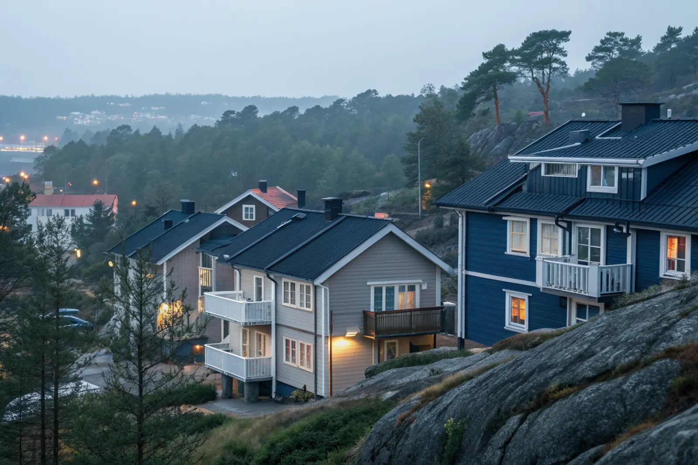

Takbyte i Skärholmen
Byte av tegel-, betong- och plåttak.
Takbyte i Skärholmen →Skärholmen i sydvästra Stockholm omfattar Skärholmen, Sätra, Bredäng och Vårberg. Vi är takläggare i Skärholmen för radhus, kedjehus och bostadsrättsföreningar.
Skärholmen, Sätra, Bredäng och Vårberg byggdes i huvudsak under 1960- och 70-talet, under miljonprogrammets år. Utöver flerbostadshusen finns radhus- och kedjehusområden från samma tid, ofta förvaltade av samfälligheter eller bostadsrättsföreningar.
Terrängen är kuperad med berg i dagen, och många radhus är byggda i suterräng eller i trappade längor. Det ger tak på olika nivåer med fler anslutningar och plåtdetaljer än på en rak länga.
Taken från den här epoken har nått en ålder där underlaget ofta är slut, även om ytmaterialet ser helt ut. Vi besiktar, dokumenterar och föreslår åtgärder i en ordning som föreningen kan planera ekonomin efter.
Oavsett om du behöver ett komplett takbyte eller en riktad renovering ger vi en tydlig bedömning och offert. Vi arbetar även i grannområden – se alla områden vi arbetar i.

På 1960–70-talens radhus är låglutande tak med papp eller betongpannor vanliga. Typiska problem är läckage vid uppvik mot högre längor, igensatta takbrunnar och rostiga takfotsplåtar. Där taken tilläggsisolerats utan att luftspalten anpassats kan det bildas kondens på vinden.
Fibercementskivor på tak och fasader förekommer i bebyggelse från den här tiden och kan innehålla asbest. Vid rivning krävs behörig personal och rätt hantering, vilket vi planerar in redan i kostnadsförslaget.
Skärholmen tillhör Stockholms stad. Ett nytt tak med samma material och kulör kräver normalt inget bygglov, men en övergång till annat material eller ändrad takform bör stämmas av med stadsbyggnadskontoret.
I radhusområden med gemensamma gårdar och smala gångvägar planerar vi var ställning, container och material ska stå, så att framkomligheten för boende och räddningstjänst behålls.
Byte av tegel-, betong- och plåttak.
Takbyte i Skärholmen →Riktade åtgärder som förlänger takets liv.
Takrenovering i Skärholmen →Bedömning av skick inför beslut.
Takbesiktning i Skärholmen →Nytt ytskydd på plåttak.
Takmålning i Skärholmen →Skonsam tvätt och mossbehandling.
Taktvätt i Skärholmen →Nytt plåttak och plåtarbeten.
Plåttak i Skärholmen →Vi utgår från Bromma (Mariehäll) och når Skärholmen via Essingeleden och E4/E20. Vi håller kontakt med styrelse eller husägare under hela projektet.
Läs mer om tak på villa eller jämför takbyte och takrenovering innan du bestämmer dig.
Vi arbetar även i Hägersten.
Takläggare i Hägersten →Vi arbetar även i Huddinge.
Takläggare i Huddinge →Vi arbetar även i Botkyrka.
Takläggare i Botkyrka →Vi arbetar även i Älvsjö.
Takläggare i Älvsjö →